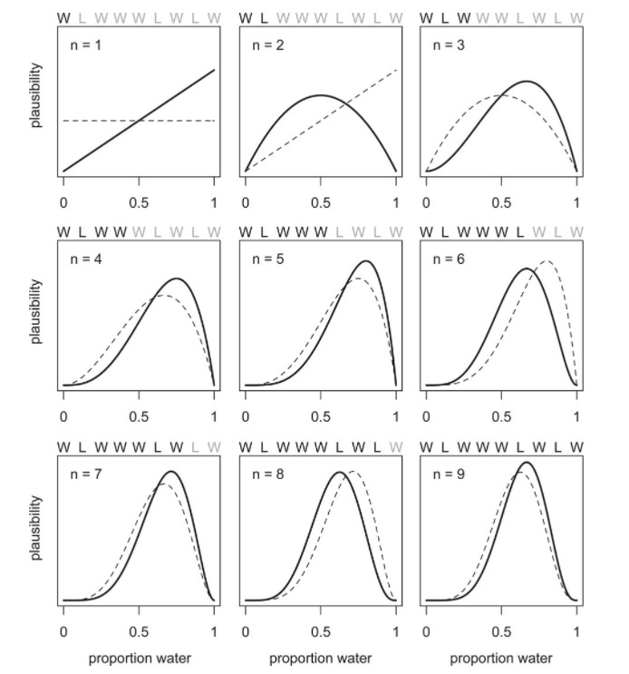
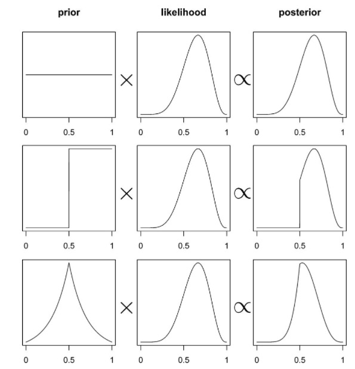
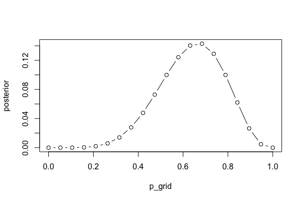
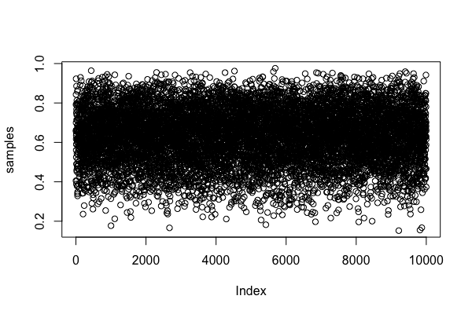

Week 9 lecture notes - PSYC 5316
Last week, we introduced Bayes theorem, and began talking about Bayesian inference, using terms like prior, posterior, and likelihood. Recall that Bayes theorem gives us the fundamental equation of Bayesian updating..that is:
\[ \text{posterior} \propto \text{likelihood} \times \text{prior} \]
This wee, we will begin learning how to move beyond the concept of Bayesian updating to using it in a modeling context.
Building Bayesian models
Bayesian modeling uses the basic vocabulary of Bayes theorem that we developed last week. Our goal is to quantify our posterior beliefs in a model. We do this by updating our prior beliefs via Bayes theorem…that is, posterior = prior x likelihood.
Let's revisit the "globe tossing" example from the first exam.
Suppose you have a globe that represents the Earth. You would like to estimate how much of the surface is covered in water. To measure this, you adopt the following strategy: toss the globe up in the air. When you catch it, you will record whether the surface under your right index finger is water or land. Then you toss the globe up in the air again and repeat the procedure. The first nine samples generate the following sequence:
W L W W W L W L W
where W indicates water and L indicates land. So in this example you observe six W (water) observations and three L (land) observations. Call this sequence of observations the data.
To construct a model, we need to make assumptions. Designing a simple Bayesian model uses a design loop with three steps.
- Data story: Motivate the model by narrating how the data might arise.
- Update: Educate your model by feeding it the data.
- Evaluate: All statistical models require supervision, leading possibly to model revision. We'll talk about this later.
The data story
The "data story" amounts to explaining how each piece of data is born. This usually means describing aspects of the underlying reality as well as the sampling process. The data story in this case is simply a restatement of the sampling process:
- Assume the true proportion of water covering the globe is p.
- A single toss of the globe has a probability p of producing a water (W) observation. It has a probability 1 − p of producing a land (L) observation.
- Each toss of the globe is independent of the others.
This is usually translated into a probability statement, called a likelihood. Based on the story, we can use a binomial likelihood to model the data generation.
\[ f(x,N,p) = {N\choose x}p^{x}(1-p)^{1-x} \]
Updating

In this figure, we see how Bayesian updating works.
- start with a prior that assigns equal probability to all values of \(p\) between 0 and 1.
- after seeing the first "W", our posterior changes. Now, \(p=0\) is impossible (probability = 0), and \(p>0.5\) is much more likely than \(p<0.5\).
- after seeing the next data "L", the posterior changes again. Both \(p=0\) and \(p=1\) are impossible, with \(p=0.5\) most likely (which makes sense, since out of TWO tosses, we've seen one W and one L).
- after seeing the next data "W", the posterior again shifts toward \(p=1\), but note that \(p=1\) is still impossible.
- each observation of "W" shifts the peak toward the right \(p=1\), while each observation of "L" shifts the peak toward the left.
From this, we can think of a Bayesian model as a machine that:
- starts with a prior belief
- takes in some data
- updates the prior belief to a posterior belief.
Thus, all Bayesian models require a prior in order to function!
Role of the prior?
This is where Bayesian modeling gets its most criticism. In theory, you can use ANY prior you want. Ideally, the prior you use should reflect your prior state of knowledge about the model.
To see how the choice of prior can affect your posterior, consider the diagram below:

In the first row, we use a uniform prior. That is, each value of \(p\) is equally likely. When we multiply the prior by the likelihood, the resulting posterior looks the same as the likelihood.
In the second row, we use a different kind of prior. Here, our prior belief is that \(p\) MUST be larger than 0.5. When multiplying by the likelihood, our resulting posterior belief still reflects this. Notice that the posterior probability is still 0 for any \(p<0.5\)
Finally, in the third row, the peaked prior shifts and distorts the posterior (relative to the original likelihood).
Computations with Bayesian models
So far, we have concentrated on the conceptual side of Bayesian modeling. That is, we've talked about what Bayesian models do (build posterior distributions based on priors and data). We haven't actually talked about HOW to do these computations. That's where we'll go next.
The mathematics behind Bayesian computation can get pretty complex. Any course in mathematical statistics that does Bayesian computation will require knowledge of the integral calculus.
Fortunately, we now have modern computing methods that can do really good approximations for us. As a first encounter, we'll talk about grid approximation today.
Grid approximation
Grid approximation works on the basis of dividing the "parameter space" (that is, all the values of \(p\) we could consider) into a finite set of points. Then, we can define our prior and likelihood on this finite set of points, after which the posterior can be computed using simple arithmetic.
Here's how it works:
- Define the grid. This means you decide how many points to use in estimating the posterior, and then you make a list of the parameter values on the grid.
- Compute the value of the prior at each parameter value on the grid.
- Compute the likelihood at each parameter value.
- Multiplying the prior by the likelihood. This gives you the unstandardized posterior at each parameter value on the grid
- Finally, standardize the posterior (that is, turn it into a probability function). This is done by dividing each value by the sum of all values.
For our globe tossing example, the following code will accomplish each of these steps:
p_grid = seq(from=0, to=1, length.out=20) prior = rep(1, 20) likelihood = dbinom(x=6, size=9, prob=p_grid) posterior = likelihood * prior posterior = posterior/sum(posterior)
We can plot the resulting posterior distribution as follows:
plot(p_grid, posterior, type="b")

As an exercise, you should try using sparser grids (i.e., less than 20 points) and denser grids (i.e., more than 20 points). What happens to your plot of the posterior?
Also, we can investigate the different priors we used earlier. Re-run the code chunks above with the following definitions for prior:
prior = ifelse(p_grid < 0.5, 0, 1) prior = exp(-5*abs(p_grid - 0.5))
Using sampling to approximate posterior
In practice, most methods for computing posteriors rely on sampling from the posterior. The idea is that once the model is built (i.e., once you've defined the prior and likelihood), we can estimate the posterior by pulling LOTs of samples, and then using those samples to answer questions that we care about.
To see how this works, we'll illustrate with our globe tossing model.
Let's start with a fairly dense grid approximation:
p_grid = seq(from=0, to=1, length.out=1000) prior = rep(1, 1000) likelihood = dbinom(x=6, size=9, prob=p_grid) posterior = likelihood * prior posterior = posterior/sum(posterior)
The following code will pull 10,000 samples from the posterior distribution:
samples = sample(p_grid, prob=posterior, size=10000, replace=TRUE)
We can see those samples here:
plot(samples)

We can also plot the density of those samples. Notice how closely it resembles our posterior plots from above.
plot(density(samples))

Computations with posterior samples
Once we have our posterior samples, the model's work is done. But your work as a modeler has just begun. The next step is to summarize and interpret the posterior distribution. Exactly how it is summarized depends upon your purpose. But common questions include:
- How much posterior probability lies below some parameter value?
- How much posterior probability lies between two parameter values?
- Which parameter value marks the lower 5% of the posterior probability?
- Which range of parameter values contains 90% of the posterior probability?
- Which parameter value has highest posterior probability?
These simple questions can be usefully divided into questions about (1) intervals of defined boundaries, (2) questions about intervals of defined probability mass, and (3) questions about point estimates. We'll see how to approach these questions using samples from the posterior.
Intervals of defined boundaries.
Suppose I ask you for the posterior probability that the proportion of water is less than 0.5. Using the grid-approximate posterior, you can just add up all of the samples where the corresponding parameter value is less than 0.5:
sum(samples<0.5)/10000
We can also ask what proportion of the posterior distribution is between \(p=0.5\) and \(p=0.75\).
sum(samples>0.5 & samples<0.75)/10000
Intervals of defined probability mass
Suppose instead I ask you for the 80th percentile of the posterior distribution:
quantile(samples,0.8)
We can also do confidence intervals (usually called credible intervals in Bayesian modeling). For example, we can compute a 80% confidence interval:
quantile(samples, c(0.1,0.9))
In contrast to confidence intervals, the bounds of a 80% credible interval can be interpreted in terms of probability. That is, there is a 80% probability that \(p\) is between 0.46 and 0.82. This is not true for confidence intervals!
There is another type of interval estimate that we can compute with posterior samples: the highest posterior density interval (HPDI). The HPDI is defined as the narrowest interval containing the specified probability mass. It is usually different from the 80% credible interval, as we'll see in the following example.
Note: the code below will look a little more complicated. That is because base R cannot do the HPDI computation. However, the coda package can. Since it works with MCMC samples (more on this later), we first have to convert our posterior samples to an MCMC sample. Then, we can use the HPDinterval function:
library(coda) sampMCMC = as.mcmc(samples) HPDinterval(sampMCMC, prob=0.80)
Compare the endpoints of the 80% HPDI with the endpoints of the 80% credible interval.
Point estimates
We can also just compute a mean or median:
mean(samples) median(samples)
However, if the posterior distribution is skewed, a mode might be better. The drawback is that it is a little harder. The idea of the code below is to compute the density of the samples, then find the \(x\) value (i.e., the parameter value) that produces the highest density (which.max).
dens = density(samples) dens$x[which.max(dens$y)]
Evaluating Bayesian models
At this point, our computations have given us information about the plausible values of \(p\) for our binomial model. For example, we computed an 80% HPDI for \(p\) to be [0.47,0.83], which means that \(p\) lies between 0.47 and 0.83 with probability 0.80. In fact, we estimate the entire posterior distribution (i.e., the probability values for all \(p\) between 0 and 1).
We can now take this information and "go the other way". That is, we can use the estimated parameter values \(p\) and estimate how likely a given data observation would be. That is, our model is generative in the sense that we can generate predictions from the model.
To illustrate, let's assume that \(p=0.7\). The following R code will perform 1000 simulations of our experiment (as a reminder, remember that we started with the game of tossing a globe 9 times and recording W or L..the rbinom will count the number of "successes" as water landings). Then, we'll plot a very simple type of histogram to show the relative frequency of each possible number of outcomes (0-9).
predictions = rbinom(1000, size=9, prob=0.7) plot(table(predictions), xlim=c(0,9))

Note that with \(p=0.7\), we still get quite a large range of possible outcomes. However, the outcomes \(x=6\) and \(x=7\) are still the most frequent (as we would expect, since 70% of 9 is 6.3).
As an exercise, you should play around with different values of \(p\), ranging from small values (e.g., \(p=0.1\)) to larger values (e.g., \(p=0.9\)). What changes about the distribution of predictions?
The R code below will show how the distribution of predictions changes for \(p\) from 0.1 to 0.9:
par(mfrow=c(1,5))
Ps = c(0.1,0.3,0.5,0.7,0.9)
for (i in 1:5){
predictions = rbinom(1000, size=9, prob=Ps[i])
plot(table(predictions), xlim=c(0,9), ylab="", main=paste("p=",Ps[i]))
}
par(mfrow=c(1,1))

However, our estimate for \(p\) is a distribution of values..not a single value. Thus, we need to incorporate our uncertainty for \(p\) in our prediction as well. The way to do this is through the posterior predictive distribution.
Basically, the idea is as follows. From the figure above, we can see that as \(p\) increases from 0 to 1, the peak of the predictive distribution shifts from the low end \(x=1\) to the high end \(x=9\). However, from our posterior distribution of \(p\), we know that the probability that \(p\) lies on either of these ends is very small. Thus, we need to incorporate this knowledge into our predictive distribitution.
Essentially, we need to form a weighted average of predictions. Predicted observations on the low end (\(x=0,1\)) come from small values of \(p\), which are not very common in our posterior distribution. Similarly, predicted observations on the high end (\(x=8,9\)) come from large values of \(p\), which are also not very common in the posterior distribution. When we weight the likelihood of the various observations by the relative posterior probabilities for \(p\), we get a result that we call the posterior predictive distribution. The math can be complicated, but the R code is simple:
predictions = rbinom(1000, size=9, prob=samples) plot(table(predictions), xlim=c(0,9))

Notice how the only bit of code that we changed is the prob value. In the above samples, we used a fixed value of \(p\). In the posterior predictive distribution, we set \(p\) to be a random variable that is shaped like our posterior distribution for \(p\). Since we approximated this distribution with samples earlier, we can simply set prob=samples to accomplish this.
Notice how the posterior predictive distribution peaks around 6, which matches with our observed data (remember, we saw \(x=6\) water landings in our example). Thus, we can conclude that the model is adequate in the sense that it predicts what we've already seen. This predictive adequacy is a fundamental part of Bayesian modeling, and it is called a posterior predictive check.
Summary
In this lecture, we have talked about how to construct a Bayesian model. We begin with a data story; that is, we hypothesize a process by which our data might have arisen. This results in a likelihood function. We then decide on a prior, which represents our prior knowledge. Then, we use Bayes theorem to update our model by feeding it the data. Technically, this amounts to computing a posterior by multiplying the prior and the likelihood. Computationally, we use sampling to accomplish this. Once we estimate our posterior distribution, we check our model by generating a posterior predictive distribution, which incorporates both data uncertainty as well as parameter uncertainty into a single distribution. We compare this posterior predictive distribution to our observed data; if the observed data match what we would expect from the model (based on the posterior predictive), we can conclude that our model does an adequate job of describing our data.
Next time, we will focus on more modern method of posterior sampling known as Markov chain Monte Carlo sampling.